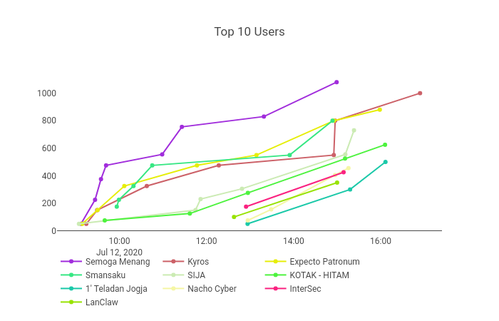
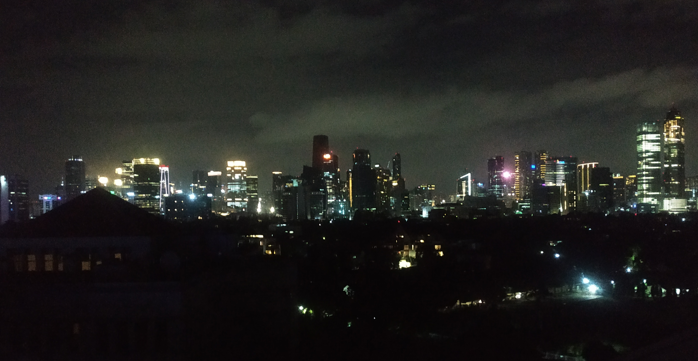
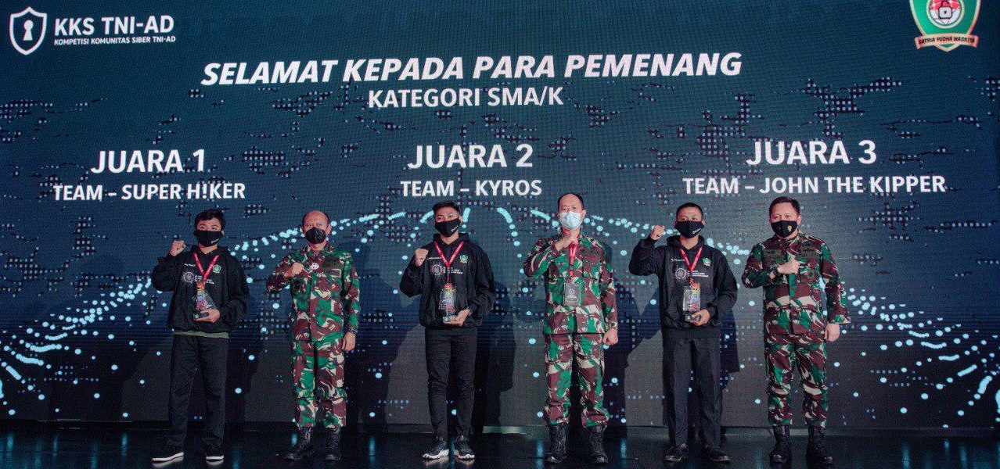
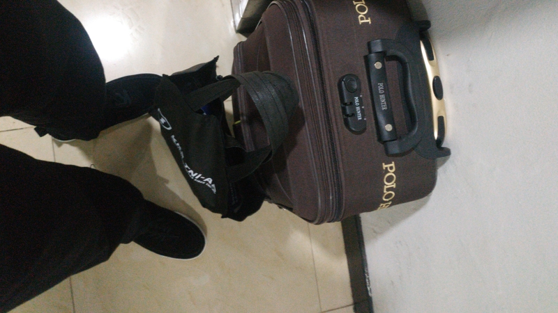

Setengah Tahun "loncat" ke Dunia CTF
Ini akan jadi seri cerita aku, tentang pengalamanku “loncat” ke dunia per-CTF-an. Mulai dari nderedeg liat scoreboard, sampai alhamdullillah menjadi juara di beberapa kompetisi lokal. Aku juga akan sedikit cerita fakta tentang diriku, dan mungkin juga tentang perjalanannya.
Aku kenal ctf ini dari temen, alias bleedz, dengan timnya dulu HungryBirds. Aku juga sempat diajari sama ketua timnya, ms Riordan tentang reverse engineering dulu. Jujur awalnya ini gak tau apa-apa tentang ctf ini. Realisasinya di real-life pun juga belum ngerti. Tapi karena ini, aku jadi semangat lagi belajar tentang komputer. Suka baca-baca lah, terutama masalah algoritma/programming. Yaa, reversing pwn is my fav kategori <3.
Icyption 2020
Kompetisi ini diadakan oleh Telkom University yang scopenya untuk SMA/K Sederajat. Ini adalah kompetisi ctf pertama saya dan ikut karena diajak temen bukan karena saya tahu ctf ya, tapi karena salah tau anggota team ini udah lulus wkwk.
Di ctf ini, kami menggunakan nama tim Semoga Menang dengan tujuan yang tidak lain adalah karena kami ingin menang :) ucapan adalah doa, siapa juga yang nggak ingin menang :).
Kualifikasi
Babak kualifikasi ini dilaksanakan tanggal 30 Juni 2020, secara online. Dengan kurang lebih, 60an team sekolah di tingkat nasional. Overall, tidak ada atmosfer yang menarik di babak kualifikasi ini, problem yang diberikan pun juga nggak terlalu susah, walaupun masih ada yang ndukun sih.
Problem yang diberikan berjumlah 10 dengan berbagai kategori. Kesulitan peserta adalah pada bagian reversing dan binary exploit pada Windows. Terbukti, tidak ada yang solve pada 2 kategori tersebut. Yaa, aku memang belum pernah pwning diservice yang berjalan di os windows. Tapi untuk reversing yaitu tentang serial aku bisa katakan sudah 7/8 jalan. 1/8 nya itu untuk mencari flagnya, karena sebanyak ribuan serial yang lolos validasi oleh soal ¯\_(ツ)_/¯.
Selanjutnya, tentang perhitungan point. Point dihitung secara statis. Btw, karena soal juga tidak terlalu susah, ini membuat 15 team diposisi atas memiliki nilai yang sama, wkwk. Jadi, dari 10 team yang akan diambil untuk lanjut ke final, ditambahkan menjadi 15 tim yang masuk kedalam final. Dan kami salah satunya, yeay!.
Final
Di final kali ini dilaksanakan juga secara online pada tanggal 12 Juli 2020, dengan aturan tambahan yaitu harus on-camera dengan discord sebagai pengawasan oleh panitia. 10 problems diberikan di final ini dengan waktu kalo nggak salah 5 jam, yang pastinya dengan tingkat kesulitan yang ditambah. Point dihitung dengan statis lagi, tetapi karena kesulitan soal, kejadian seperti saat kualifikasi tidak terulang kembali. Bisa dilihat dibawah ini.

final scoreboardDi final ini soalnya juga sudah lumayan bagus kalo saya nilai sekarang pada saat buat tulisan ini. Selain sudah mengimplementasikan RSA dibagian cryptography-nya, binary exploit pada final ini juga menggunakan target linux. Walaupun terdapat admin-mistake pada soal ini, karena flag bisa didapatkan dengan check string atau decompile binary membuat soal ini memiliki jumlah solves yang lumayan. Tetapi tidak untuk soal RSA. 2 team yang berhasil menyelesaikan soal ini, salah satunya saya :).
Reversing ternyata yang menjadi momok dipeserta pada kali ini. Yaa, tidak ada yang menyelesaikan soal tentang windows tersebut. ILSpy tidak bisa mendecompile file PE tersebut entah mengapa. Mungkin bisa dengan dnSpy di windows.
Akhirnya, kami menjadi pemenang dari kompetisi ini, dan alhamdullillah do’a dari nama team kami terkabulkan, hehe. Untuk writeupnya, sudah saya tulis disini.
COMPFEST 12
Kompetisi ini diadakah oleh universitas terbaik Indonesia, yang tidak bukan adalah Universitas Indonesia (UI). Dengan targetnya adalah ditingkat umum. Jujur, disinilah the-real-ctf aku dimulai. Dimana dengan kualitas soal yang sangat-sangat bagus, membuat aku tertarik ngulik-ngulik lagi tentang ctf ini. Khususnya dikategori reversing dan pwn :).
Sedikit cerita, pada saat kompetisi dimulai, tangan terasa gemeteran gan entah mengapa. Dan ketika melihat scoreboard, berasa memiliki lawan-lawan yang nggak wajar, wkwk. Ya, karena tingkat umum. Targetnya sih masuk 20 besar dulu lah, ya kalo bisa 10 besar.
Kali ini, aku hanya bermain dengan satu orang, bleedz. Dengan melihat scoreboard yang kayak hantu, itu membuat aku kemrungsung, terbukti pada saat 3-4 jam pertama tidak solve apapun, lol. Dimulai setelah solat ashar, dengan hati jadi adem dan tidak kemrungsung tentunya. Aku mulai menyelesaikan soal demi soal, huehue. Bener gan, ini dari peringkat 35-an menjadi peringkat 10 lol. Sempat naik turun juga disini, khususnya setelah maghrib. Hingga akhirnya turun diposisi 14 sampai kompetisi selesai. sad.
Tidak masuk final pada kali ini, tapi target awal aku sudah tercapai yeay. Btw, tcache-king is my favorite problem, thanks for the author!
Moral of the Story
Harus sabar dan tenang gan. Terburu-buru atau “kemrungsung” itu membuat nggak fokus, plus strees wkwk. Yaaa, that’s it. sekian …. next harus ikut lagi insyaallah.
Cyber Jawara 2020
Diadakan oleh IDSRTII dari Pemerintah. Ini menjadi 2 pencapaian yang sangat bagus untuk hati saya dimasa pandemi covid-19 ini semoga segera hilang, amin. www. Pada kompetisi ini, kami menggunakan nama team Lontang Lantung yang tidak lain adalah usul dari orang yang memiliki alias bleedz.
Kualifikasi
Banyak problem disediakan disini, dengan rata-rata 4 challanges disetiap kategorinya. Aku sendiri menyelesaikan 2 - 2 - 5 soal pada kategori crypto - pwn - reversing secara berurutan. Harusnya bisa solve 3 soal sih dipwn, karena kurang telitinya aku tentang out-of-bound jadi nggak solve wkwk. Akhir dari kompetisi, kami jatuh pada posisi 17th dan masuk menjadi salah satu finalis kompetisi ini.
Kualitas soal, jangan ditanya lagi gan. Yang buat soal yang tidak lain adalah Fariskhi Vidyan, dkk. yang merupakan wakil dari Indonesia yang sudah sampai Internasional, mantap.
Final
Final kali ini dilaksanakan secara online, tidak di Bali seperti pada tahun-tahun sebelumnya, sad :'( Semoga aja segera selesai masa pandemi ini.
Tidak bisa buat banyak pada saat final berlangsung, aku kesulitan untuk mencari libc yang dipakai oleh server. Karena pada saat kompetisi final berlangsung, aku belum mengerti tentang docker. Pada deskripsi soal, ubuntu:latest menurut aku adalah ubuntu:20.10 yang menggunakan versi 2.32 untuk libcnya. Jadi, aku hanya menyelesaikan 1 soal saja dari keseluruhan soal.
Jika mau mencoba soal final, ingin melihat scoreboard dan solusi, disini.
KKS TNI-AD 2020
Event ini diadakan oleh Pussansi-AD bekerja sama dengan Defenxor, dan ini menjadi offline kompetisi pertama saya (bukan di-kompetisi-nya sih, cuma harus ke Jakarta bagi yang juara). Dan disinilah saya pertama kali ke Jakarta dan bisa merasakan sensasi naik pesawat :). Kali ini, aku tidak menulis tentang ctf-nya. Melainkan, perjalanan aku kesana atau mungkin lebih ke acaranya.
Acara berlangsung di Hotel Bidakara Jakarta. Tepatnya pada tanggal 9 Desember 2020. Dengan protokol kesehatan tentunya. Sedikit cerita, kami sampai di hotel sekitar jam 11.30-an, sebelum dhuhur lah ya. Dan check-in dihotel dimulai jam 14.00 :). Lalu, 2,5 jam ngapain aja? jangan ditanya lagi, tentunya turon-turon gajelas di serambi masjid yang ada di lantai paling bawah.
Karena nggak sabar buat tidur dikamar, aku memutuskan untuk tidur dulu di serambi masjid agar waktu kerasa lebih cepat. Dengan mengamankan barang terlebih dulu tentunya. Jam 2 tepat, langsung naik ke lobby dan check-in, finally.
Lalu, dimalam harinya aku kontak tim-tim dari SMA/K yang ke Jakarta untuk main ke kamarku. Kebetulan aku hanya berdua dengan bleedz temanku, tidak dengan guru sekolahku. Dan disinilah kesenanganku, melihat kaca dengan pemandangan kota.

selamat malam, jakartaFun fact, karena pikiran terlalu tenang dengan melihat pemandangan kota Jakarta pada malam hari diatas sofa, aku tertidur diatasnya lol. Lanjut pada jam acaranya, langsung ke tkp - absen - tanda tangan - hoodie kegedean :v. Nah, disinilah aku bertemu dengan “kakak kelas” dulu.
Masuk ke acaranya, sudah disiapkan monitor yang didalamnya ada vm yang dijalankan untuk kompetisi final dikategori umum dan tni. Pertama kali liat attack-defend seru dan berasa pengen gas ikut wkwk.

good game well played all teamsFinally, dapat piala, piagam dan uang yang lumayan tentunya. Ini menjadi catatan prestasi akhir tahun 2020 bagi saya selama setengah tahun masuk ke dunia ctf. Semoga ditahun berikutnya bisa mendapat prestasi seperti ini lagi.
Dah. malamnya aku tidur untuk bangun pagi besok dan pulang meninggalkan Jakarta, sad.

suatu toilet di hpkFoto diatas adalah sebelum aku dipindah penerbangan ke bandara CGK. Dan naik go-car yang biayanya lumayan. Alhamdullillah sampai solo sekitar jam 11.30 wib.
Penutup
Ini akan menjadi tulisan terakhir saya ditahun 2020, walaupun dipages sebelumnya tertulis tahun 2021. Dah gan nggak usah panjang-panjang, sekian .. pamit.